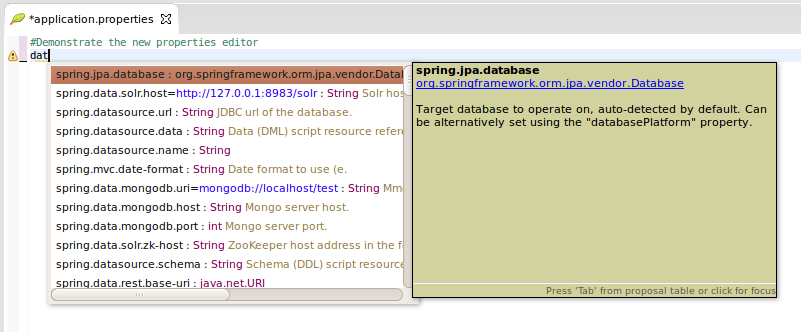
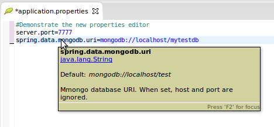
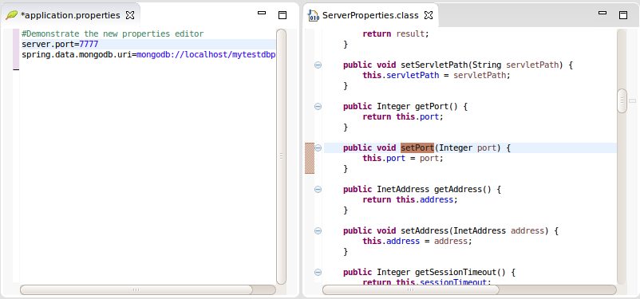
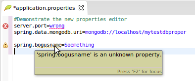
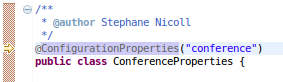
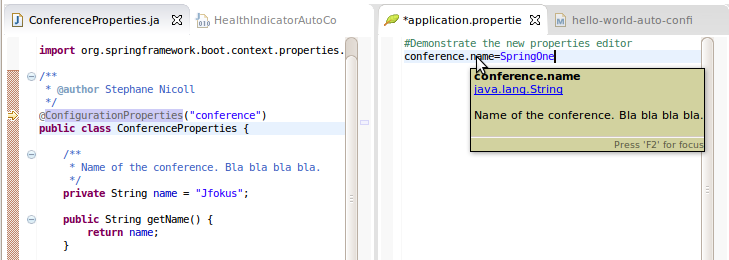
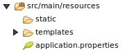
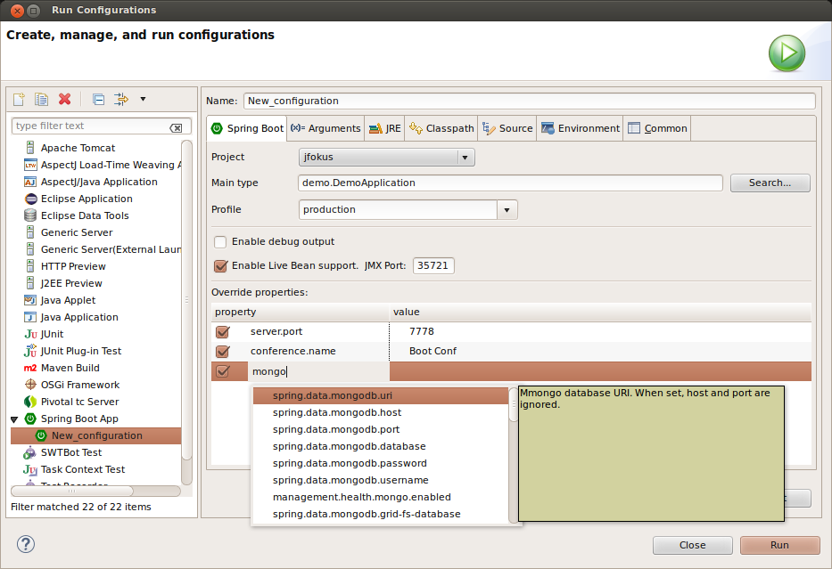
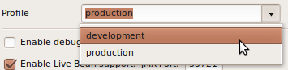

Spring Tool Suite & Groovy/Grails Tool Suite 3.6.3.SR1: New and Noteworthy
General Updates
Something...
Very interesting general stuff.
Spring Boot Support
Spring Properties Editor
The Spring Properties Editor is a specialization of the default Eclipse properties editor. It understands Spring Boot's configuration metadata (this is information stored in "spring-configuration-metadata.json" files included in the jars of Spring Boot Dependencies). The editor provides the following features:
The Content Assistant suggests auto-completions as you type.
An Info Hover is shown when you hover the mouse over a known property name.
Use CTRL-CLICK navigation to take you directly to the source code where a known property-name is defined.
The Reconciler shows errors and warnings as you type.
Live Meta Data You can define your own properties by annotating your own classes with a '@ConfigurationProperties'.
Add the 'spring-boot-configuration-processor' as a dependency in your 'pom' (or 'build.gradle') and STS will configure Eclipse's Annotation Processor to generate the metadata for your project on-the-fly.

Now, any time you define a new property, the editor will recognize it instantly.
Enabling the Spring Properties Editor STS automatically configures Eclipse Content Types so that the Spring Properties Editor is used for any file called 'application.properties'. This is indicated by the 'Spring Leaf' icon in the Package and Project Explorer Views.
Properties files with other names will be opened with Eclipse's basic property editor. You can easily override that behavior by right clicking any '.properties' file and selecting "Spring >> Enable Spring Property Editor"
Spring Boot Launch Configuration Editor
This release provides a brand-new, spring-boot-specific Launch Configuration Editor.
The "Run As >> Spring Boot App" menu still works as before except that it now creates a Spring-Boot specific launch configuration. This configuration can then later be easily customized with the Launch Configuration Editor.
You open the editor by selecting either the "Debug As >> Debug Configurations..." or "Run As >> Run Configuration..." menu.
The editor has a Boot-specific tab that has the following features:
The Project and Main Type selection widgets are like those on the standard Java Launch Configuration Editor. However its 'Main Type Search' algorithm is tweaked to work better for Spring Boot projects.
The 'Profile' text/pulldown combo let's you select an optional Active Profile. Type an arbitrary profile name or pick one from the pull-down menu. The menu is populated from with profiles you used before as well as profiles you have defined by creating a properties files like 'application-production.properties'.
The 'Enable Live Bean Support' adds some VM arguments to the launch to enable JMX and Spring infrastructure that allows extracting information about Spring Beans from a running process. You can later view this information by right clicking on your project (while it is running) and selecting the "Spring >> Open Live Beans Graph".
The 'Override Properties' table lets you add additional property associations which will take precedence over those that are defined in the 'application.properties' file or the active profile. The table viewer provides auto-completions for property names.
Useful Links
Download STS: https://spring.io/tools/sts/all
Download GGTS: https://spring.io/tools/ggts/all
STS/GGTS Issue tracker: https://issuetracker.springsource.com/browse/STS
Known issues in this release
Live configuration metadata generarion requires Spring Boot 1.2.2
Spring Boot 1.2.1 configuration processor does not work correctly when executed from Eclipse's incremental build. This issue is fixed in Spring Boot 1.2.2. This only affects 'live' metadata generated from your own source code, not the metadata that is packaged inside spring-boot jars themselves. So you can still use older versions of Boot, but the 'live metadata' updates will not be accurate. See Spring Boot issue GH-2313 for details.
Mac OSX app signing not yet updated for 10.9.5 and 10.10
The OSX platform specific signing of the STS and GGTS Mac apps is not yet updated to a Mavericks infrastructure. Therefore running STS/GGTS on OSX 10.9.5 and OSX 10.10 will cause Gatekeeper to complain about STS/GGTS. In that case, please go to the System Preferences -> Security and do "Open Anyway". If that doesn't work, you have to disable the Gatekeeper checks to allow every app to run. Then start STS/GGTS. Once you started STS/GGTS at least once successfully, OSX will remember your decision about this app, will not ask you again, and you can switch back Gatekeeper security settings to a more secure mode again.
Check for Updates throws an error when updating from STS 3.5.1
Doing a "Check for Updates" of STS to an existing installation throws an error about a problem with the Groovy-Eclipse JDT patch feature. In that case, disable the Groovy-Eclipse JDT patch feature from the list of components to update and continue. This happens on the Eclipse 4.3 platform only. If you upgrade from STS 3.6.0 or 3.6.1 on Eclipse 4.4, you will not hit this problem.
Dashboard and Retina Displays
When running STS/GGTS on top of a JDK7, the new dashboard looks a bit blurry when using a HiRes (Retina) display, for example on a Retina MacBook Pro. This is due to the underlying browser technology that is used to display the dashboard content and that is coming from JavaFX. The JavaFX version that ships with JDK7 doesn't support retina displays. The solution for this is to run STS/GGTS on top of a JDK8 build. The JavaFX version that comes with JDK8 supports retina displays.
Setting the JDK
STS and GGTS requires a JDK to run on top of. Nevertheless the native launcher component might pick up a JRE automatically if you don't specifiy which JDK to run STS/GGTS on top of. To avoid this, you can specify the JDK in the sts.ini file that comes with your STS/GGTS installation. Add a line at the beginning "-vm" and an additional line below that which points to the "javaw" executable of the JDK on your machine.
Issues on Linux (GTK3)
Eclipse 4.4, upon which STS and GGTS are based, is the first Eclipse release where GTK3 is the default for the SWT widget library. There are some issues with this still:
- STS New Dashboard doesn't work under GTK3 because it uses JavaFX which is not currently compatible with GTK3. Instead the old dashboard will open.
- The Eclipse editor may be slow to respond (Eclipse Bug 434898).
You may also experience other UI rendering glitches. If you exprience any of these problems you can avoid them by forcing SWT to switch back to using GTK2. Just set the environment variable "SWT_GTK3=0" before launching STS or GGTS.